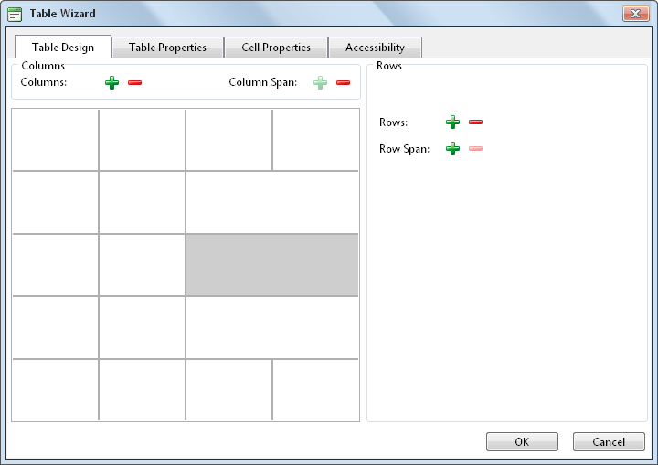

Setting the Table Design
How to set the design a table using the Table Wizard of the TelerikEditorProvider for the RTE.
- Open the Table Wizard. See "Inserting a Table" - OR - Right click on an existing table and select
 Table Properties.
Table Properties.
- Go to the Table Design tab. If you are adding a new table, a table of two columns by two rows is displayed as the basis for your design. If you are editing an existing table, your current design is displayed.
- To modify the table, perform any of these actions:
- To add a column: At Columns, click the Increase button.
- To remove a column: At Columns, click the Decrease
 button.
button. - To insert a column span: select a cell and then at Column Span, click the Increase button.
- To remove a column span: select a cell and then at Column Span, click the Decrease button.
- To add a row: At Rows, click the Increase button.
- To remove a row: At Row, click the Decrease button.
- To insert a row span: select a cell and then at Row Span, click the Increase button.
- To remove a row span: select a cell and then at Row Span, click the Decrease button.
- Optional. Select a new tab to set additional properties.
- Click the OK button.

Designing a Table